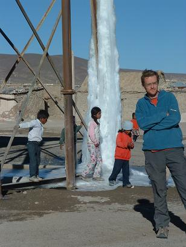

La indecisión es la llave a la
flexibilidad
|
|
||
|
La indecisión es la llave a la
flexibilidad |
|
|
|
********************************************************************************************* Newer news can be found on scotlandnews |
| Salar del Uyuni, Bolivia, June 9-12, 2005. Day Three. | ****************************************************************************** *************** After a difficult morning with hours of delay at the hotel on the edge of the salt plains, it eventually transpires that Hector, our driver, had been involved in a car crash in the night on his way back from a fiesta at a nearby village. The 4x4 was trashed, but we were told that he and his companion were injured but fine. The rest of the Salar trip was undertaken with a substitute driver and everyone was a little on edge. Finally on the real salt plains, Jim takes a personal moment in front of the Isla de Pescas (the inappropriately named Island of the Fishes).
Salar de Uyuni stretches across vast areas of Bolivia and down into Chile. It's composed of salt deposited from a long-gone ocean. The salt is four metres deep according to our new driver, and 100 metres deep according to the driver of the other jeep. Either way, it's made of lots of salt. This bus is small...
That bus is far away...
This hotel is made of blocks of salt...
Catherine practices her Zidane moves with some salt.
This is the salt mining operation at the other edge of the plain. The salt harvesting industry is essentially a two-part process that works like this: Step 1 - dig salt. Step 2 - put salt in bags.
Early morning mist over the Monument to the Heroic Mechanic in downtown Uyuni.
The team's trip to Bolivia's salt plains was an event filled, sensory blinding, and sometimes traumatic enterprise all undertaken just for you. For you, gentle reader, we have suffered all manner of indignities. For Cyril and Jim these privations included, but were not limited to, several bad hair days...
|
| Salar del Uyuni, Bolivia, June 9-12, 2005. Day Two. | ********************************************************************************************* On the second day of the jaunt across the Salar de Uyuni after one of the coldest nights in recent times, the merry band gets a bit of bouldering practice. The rocks here, in the midst of a giant desert, have been sandblasted by the wind for thousands of years, giving rise to yet another surreal landscape. What are you going to do except climb up there?
This is the most famous of those rocks - Arbol de Piedra, the stone tree. Jim nearly had it too, just needed five more minutes to figure out the crux move. Honest.
Catherine contemplates another frozen lake, again ringed with salt.
If she had her way, all animals of the cameloid family would be confined to little islands prior to being sent to the grill. She's still bitter over the grass-spitting incident.
Although the sun is blinding, it's fiercely cold on the plains, even in the middle of the day. This is the (leaking) watertower for the railway that used to serve the town of Julaca, when it was an important nitrate mining centre. Nowadays it serves as a major venue for children scrounging sweets from passing gringos. This was also the beginning of a series of bad hair days for Jim.  Loic, the Belgian guy, keeps warm...
|
| Salar del Uyuni, Bolivia, June 9-12, 2005. Day One. | ********************************************************************************************* The Salt Plains of Bolivia were one of the few things in Bolivia that it was possible to get to, given the demonstrations and protests paralysing that country. The only border into Bolivia open was the Salar de Uyuni crossing from San Pedro de Atacama in Chile. There are no roads across the Salt Plains for much of its extent, so you have to sign up for a multi-day tour in a 4x4. The team travelled with a group consisting of two Belgians, a Brazilian, a French Canadian, and the driver, Hector, who was later to be involved in a nasty car crash. He's OK, or so they told us.
On the first day, after crossing into the bitter cold of Bolivia, there's Laguna Verde. It's the action of the wind whipping up the copper and other chemicals (originating from the volcano in the background) in the water that cause the green colour. Before 11 AM, when there's no wind, the lake is just lake-coloured. It looks like the Mediterranean, but it was freezing cold here.
On a day that seemed to take us from one bizarre natural feature to another, next up were the Dali-esque rock structures. This place looks like the background of Dali's 'Melted Clocks' picture, and indeed, Salvador himself visited here, so perhaps this was the inspiration for that work.
This was one of those 'back on the bus, y'all' whistle-stop expeditions, but there was time to warm up in the thermal springs, only metres from a frozen lake. Go Catherine...
The last stop of the day was at the boiling mud baths of doom. Warmer than the thermal springs, but not advised, despite the beneficial aspects for your skin.
Catherine, natural-born risktaker, strikes a Cartier-Bresson pose...
The region is volcanically active and at this place the pools of mud, all in different colours but uniformly stinking of sulphur, splutter and throw out jets of steam.
I tells ya - the Salar de Uyuni is like The Square in Tallaght - it has everything. |
| Random Orange House, Salar de Uyuni, Bolivia, June 10, 2005. | ********************************************************************************************* We haven't had a random orange thing in some time. There are very few orange things in the desert. Here's a house, randomly orange, in a village somewhere in the Salt Plains of Bolivia.
|
| San Pedro de Atacama, Chile. Valle de la Luna, June 8, 2005. | ********************************************************************************************* Sadly depleted to just Jim and Catherine, Team Scotland heads to San Pedro de Atacama to cycle out to Valle de la Luna (Valley of the Moon).
Everywhere you go in Latin America, there is a random dog that assigns himself to you for some period of time. This Alsatian, cluttering up the photo of Catherine, trotted around behind the team all day, even the 10 km back to town.
Although they didn't know it at the time, this was to be one of the last 'warm' destinations on the trip. Too warm for some...
Valle de la Luna is really the edge of the Salt Plains, so the white you see on the ground is salt. The area is also littered with great blobs of glass from when the valley was at the core of volcanoes.
|
| Ferg leaves from Arequipa, Peru. | ********************************************************************************************* After the Macchu Picchu mission, the Team was understandably weary and felt the need to relax in Cusco - have a beer, nice food, sleep in a bed, that kind of thing. Catherine felt the need for Cuba Libres (rum and coke) and, subsequently, the need to dance on bar tops. Deciding that enough was enough, Officer Mahony takes the road home, splitting out from the rest of the team at Arica, Chile. This border town has featured heavily on the Scotland �04+1 route, with various members of the team crossing over and back from Peru to Chile at least four times here. This photo is taken at the same spot in the bus terminal as the infamous Sideshow Ferg photo. Less baggage this time.
Ferg�s route home was to take him first to Santiago, Chile, then Buenos Aires, Argentina, before finally reaching Faha, Co. Kerry, in late June.
|